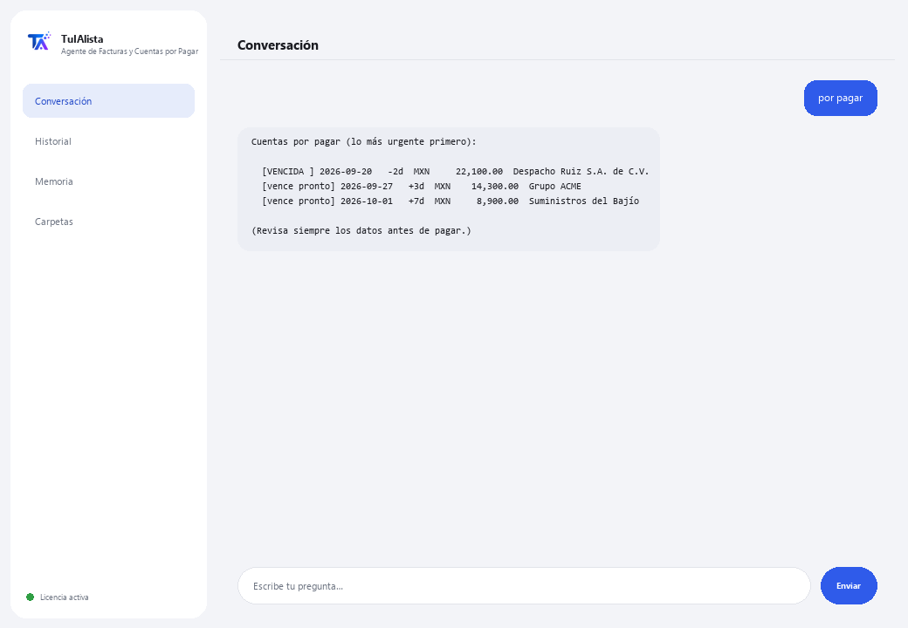

Agente de Facturas y Cuentas por Pagar
Le dices qué necesitas en tus palabras y te arma el Excel de facturas, el resumen de impuestos y las cuentas por pagar — sin capturar nada a mano.
¿Qué resuelve y qué necesitas?
Capturar facturas a mano en Excel toma horas y es fácil pagar dos veces la misma o perder una fecha de vencimiento. Este agente lee tus XML de CFDI y PDF de facturas, y te arma el Excel de captura, el resumen de impuestos y las cuentas por pagar — le escribes lo que necesitas como le escribirías a una persona, no comandos exactos.
- Necesitas: tu clave de licencia (TIA-XXXX-XXXX-XXXX-XXXX) y la carpeta con tus facturas (XML de CFDI y/o PDF). Nada de Python ni conocimientos técnicos.
- Primer resultado en menos de 5 minutos: instalas, activas, eliges tu carpeta y escribes exporta para que te arme el Excel completo.
- Tus facturas nunca salen de tu computadora — el análisis corre localmente.
soporte@tuialista.com o entra a tuialista.com/soporte — normalmente respondemos el mismo día hábil.1 Qué hace este agente
Tú le señalas la carpeta con tus facturas (XML de CFDI del SAT y/o PDF) y él:
- Captura cada factura a un Excel ordenado — lo que normalmente se hace a mano en horas: folio, proveedor, RFC, fechas, subtotal, IVA, retención, total y moneda.
- Resume los impuestos del periodo, sumando lo que cada factura declara por moneda (base, impuesto, retención, total).
- Arma tus cuentas por pagar con alertas de qué está vencido y qué vence pronto.
- Detecta facturas duplicadas.
- Responde cualquier pregunta o pedido sobre tu cartera de facturas en tus propias palabras — no memorizas comandos.
El trabajo de captura y cálculo es código local determinista (no usa IA, no alucina): lee el XML de CFDI de forma exacta y cualquier factura PDF por lectura de texto. El resultado: pagas a tiempo, sin duplicar, con tu Excel de facturas listo sin capturarlo tú.
2 Instalación (2 minutos)
Para Windows. No hace falta internet permanente ni subir nada a la nube.
Baja el instalador desde tuialista.com/descargar (agente Facturas) y ábrelo. Crea un acceso directo en tu escritorio con el logo — no requiere Python ni terminal.
Doble clic al ícono nuevo. Pega tu clave de licencia (te llegó por correo al comprar) y pulsa Activar. Verás una palomita verde cuando sea válida.
Selecciona la carpeta con tus facturas y pulsa Comenzar a usar el agente. La próxima vez arranca directo — recuerda tu clave y tu carpeta.
3 Cómo usarlo
El agente abre una ventana de chat, como una app de mensajería — no es una pantalla negra de programador. No memorizas comandos exactos: le escribes lo que necesitas casi como se lo pedirías a una persona, pulsas Enviar (o Enter), y él hace el trabajo. Estas son las 4 cosas principales que sabe hacer, con ejemplos de cómo pedírselas:

> exporta / genera el Excel / captúralasTe arma un Excel con todo: captura de cada factura, resumen de impuestos y cuentas por pagar, listo para abrir.
> impuestos / cuánto de IVAResumen de impuestos del periodo: base, impuesto, retención y total, sumado por moneda.
> por pagar / qué vence / cuánto deboTus cuentas por pagar, lo más urgente primero: vencidas, por vencer pronto y vigentes, con proveedor y monto.
> duplicados / facturas repetidasDetecta facturas que parecen estar cargadas dos veces (mismo folio/UUID, o mismo proveedor y total).
> cualquier otra preguntaEj.: “cuánto le debo a ACME”, “total por proveedor”, “compara este mes contra el anterior” — el agente entiende el pedido y arma la respuesta o el reporte.
4 Ejemplos de uso común
Armar el Excel completo del mes
“exporta” — obtienes un Excel con captura, impuestos y cuentas por pagar, listo para revisar o mandar a tu contador.
Revisión semanal de pagos
“por pagar” → “duplicados”
Cierre de mes de impuestos
“impuestos del periodo”
Una consulta puntual
“cuánto le debo a ACME este mes?”
5 Preguntas frecuentes
¿Mis facturas se suben a internet?
¿Qué formatos acepta?
¿Necesito escribir el comando exacto?
¿Detecta duplicados con seguridad?
¿Ejecuta pagos?
¿En qué idioma responde?
¿Lee un PDF escaneado?
¿Modifica mis facturas originales?
¿Puedo cambiar la carpeta?
¿Qué es el “modo seguro”?
6 Solución de problemas
No lee un archivo
Dice que no encontró facturas
No detecta bien un dato de una factura
Dice “Licencia no válida” o pide reconectar
La IA no responde a una pregunta libre
¿Ninguna de estas soluciones resolvió tu problema? Escríbenos directamente — con gusto lo revisamos contigo.
soporte@tuialista.com o entra a tuialista.com/soporte — normalmente respondemos el mismo día hábil.7 Privacidad y confidencialidad
Tus facturas nunca salen de tu computadora.
- El agente lee y procesa las facturas localmente, en tu propio equipo. No las sube a ningún servidor.
- La captura al Excel, el resumen de impuestos, las cuentas por pagar y los duplicados se calculan en tu máquina, con código determinista (sin IA).
- Lo único que viaja por internet es: (1) una comprobación de que tu licencia está activa — que no incluye tus facturas —, y (2) si le pides algo que no es una de las 4 acciones principales (una pregunta libre), se envía un fragmento de la información relevante al motor de IA para poder responder.